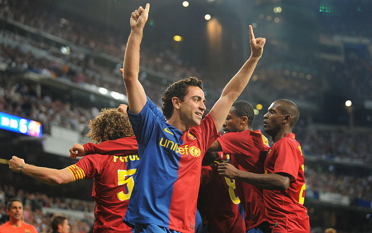

El mago del campo
Xavi Hernández Creus, conocido como Xavi, es un exfutbolista y entrenador español nacido el 25 de enero de 1980 en Tarrasa, Barcelona. Es reconocido por su brillante carrera en el F. C. Barcelona, donde jugó durante 17 temporadas, ganando 25 títulos, incluidos 8 títulos de La Liga y 4 Ligas de Campeones. Con 767 partidos oficiales y 85 goles, es uno de los jugadores más destacados en la historia del club.
Además de su éxito a nivel de clubes, Xavi tuvo una destacada trayectoria internacional con la selección española, logrando 133 internacionalidades y siendo parte fundamental de los triunfos en la Eurocopa 2008, el Mundial 2010 y la Eurocopa 2012. También recibió reconocimientos individuales, como el Premio Príncipe de Asturias de los Deportes en 2012 y múltiples inclusiones en equipos del año y premios al mejor jugador.
Después de retirarse como jugador, Xavi se convirtió en entrenador, dirigiendo al Al Sadd de la Qatar Stars League antes de regresar al Barcelona como entrenador en noviembre de 2021. Su impacto en el fútbol es tan notable que fue incluido en el Dream Team histórico del Balón de Oro como mediocentro defensivo.
